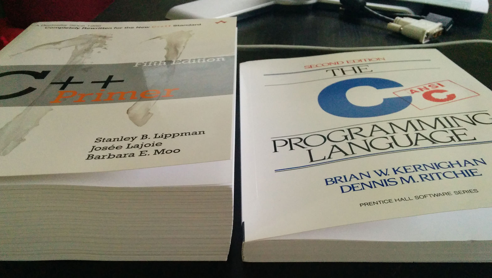
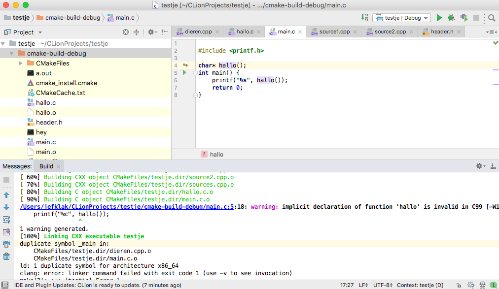

De C taal is een programmeertaal in de jaren ‘70 ontwikkeld om makkelijk hardware te kunnen aanspreken. C was/is in essentie niet veel meer dan een kleine abstractielaag bovenop assembly.
C is een imperatieve programmeertaal. Dat zal je bij het oefenen wel merken: we schrijven instructies als statements. Deze regels of statements zijn gestructureerd in functies en struct types. Het jammere hier aan is dat er weinig declarativiteit aan de pas komt. Omdat C zo weinig om het lijf heeft (low-level), drukken statements bijna altijd uit hoe iets moet werken, in plaats van wat het moet doen.
Toch is clean code voor mij van levensbelang en gaan we ook in C ons focussen op leesbaarheid. In plaats van getallen in de code gebruiken we #define, in plaats van lange statements splitsen we logische blokken op in duidelijke function blokken.
C wordt voornamelijk gebruikt in embedded system development, net omdat het zo kort bij de hardware staat. De UNIX, Windows en OSX kernels zijn volledig geschreven in C bijvoorbeeld. Het besturingssysteem van je GSM, smartwatch of (handheld) gaming systeem bouwt verder op C. Enorm veel talen zoals Java (JVM), Python, Ruby en PHP zijn geschreven in C.
Zoals we zullen zien, bevat C weinig mogelijkheden om declaratief te zijn. C++ is de objectenlaag bovenop C die de taal uitbreidt met ‘moderne’ mogelijkheden tot structureren: inheritance, templating, eenvoudigere libraries (STL), … De C++ compiler gebruikt gewoon C met laagjes C++ “sugar”, zoals de ANSI C++ Standard aangeeft.
De C taal is compact, de C++ taal is dat helaas niet. Kijk zelf maar:

Ik neem aan dat ze met ‘++’ het aantal pagina’s in handboeken bedoelden. Vergeet niet dat bovenstaande handleiding nog maar een “primer” is.
import java.io.IOException;
import java.nio.*;
class FileReader {
@Override
public String read(String file) throws IOException {
return new String(Files.readAllBytes(Paths.get(file)));
}
}
class Main {
public static void main(String[] args) {
System.out.println("reading file: ");
System.out.println(new FileReader().read("sup.txt"));
}
}Hoe zouden we zoiets in C doen? Dat wordt moeilijk. C heeft geen class systeem! De low-level C implementatie is als volgt:
#include <stdio.h>
#include <stdlib.h>
char* read(char* file) {
FILE *filePointer = fopen(file, "r");
char *buffer = malloc(255);
fgets(buffer, 255, (FILE*) filePointer);
fclose(filePointer);
return buffer;
}
int main() {
printf("reading file: \n");
printf("%s\n", read("sup.txt"));
return 0;
}Compileren met gcc -o fileio fileio.c.
Hier zijn nog veel dingen mee mis: de buffer lengte is hardcoded en het geheugen wordt niet vrijgegeven. Een FileReader klasse kan gewoon niet aangemaakt kan worden. Zoals je kan zien is dit véél meer low-level werk dan een simpele Java one-liner als Files.readAllBytes!
Met de STL library in C++ gaat het iets beter:
#include <iostream>
#include <fstream>
#include <string>
using namespace std;
class FileReader {
public:
string readFile(const char* file);
};
string FileReader::readFile(const char* file) {
ifstream inFile("sup.txt", ios::in | ios::binary);
return (string((istreambuf_iterator<char>(inFile)), istreambuf_iterator<char>()));
}
int main() {
auto reader = new FileReader();
cout << "reading file:" << endl;
cout << reader->readFile("sup.txt");
}
Compileren met g++ -std=c++11 -o fileio fileio.cpp.
C++ streams verbergen de low-level details van C File IO maar achterliggend gebeurt natuurlijk hetzelfde. Zoals je kan zien voorziet C++ ook class, publicen new keywords die Java programmeurs wel kennen. Zelfs autoin C++ 11 is de varin C# die Java mist.
De essentiële verschillen tussen C en een hogere taal zoals Java of C#:
return 0).unsigned short int)#include <stdio.h>
int main() {
int getalleke = 42;
printf("sup wereld? %d", getalleke);
return 0;
}De hoofd functie, main(), geeft een getal terug dat aangeeft aan het systeem of je programma met succes uitgevoerd is (0), of een andere error code wenst terug te geven. printf is een functie in de standaard IO header die we moeten includen, zoals een import in Java.
De “f” van printf staat voor “formatting” zoals je hierboven kan zien. Zie Formatted output.
Doe je met function. Blocks zoals if, for, while, do zijn bekend en werken op dezelfde manier als in Java:
#include <stdio.h>
void zeg_iets_als_dit_positief_is(int getalleke) {
if(getalleke > 5) {
printf("wow, positief ofwa? \n");
for(int i = 1; i <= getalleke; i++) {
printf("%d ", i);
}
printf("\n");
}
}
int main() {
zeg_iets_als_dit_positief_is(5);
return 0;
}Functies kan je niet overloaden in C - in C++ en Java wel. Er kunnen geen twee functies met naam “main” of “zeg_iets_als_dit_positief_is” maar met andere parameters bestaan.
Vergeet het maar: char[] of een char* pointer is de enige mogelijkheid. std::string zien we later als deel van C++ STL. Een array in Java is een object waar je de lengte van kan opvragen. Handig toch. Ook niet mogelijk in C…
#include <stdio.h>
#define GROOTTE 10
int main() {
int arr[GROOTTE];
for(int i = 0; i < GROOTTE; i++) {
arr[i] = i * 10;
}
for(int j = 0; j < GROOTTE; j++) {
printf("array index %d heeft waarde %d \n", j, arr[j]);
}
char string[] = "heykes cava";
printf("%s", string);
return 0;
}C voorziet de juiste hoeveelheid geheugen bij “string literals” die we kennen vanuit Java. De string[] char array bevat 12 tekens en geen 11! Omdat we het einde van de array niet kennen wordt er altijd de NULL terminator toegevoegd, \0. Zo kan je loopen en per char afdrukken - of printf het laten doen met %s.
In <string.h> zitten een aantal handige functies om strings te kopiëren, de lengte op te vragen of te concateneren. Dat kan je in GNU C: String utils terugvinden.
De enige manier om in C data te structureren is met het struct keyword:
struct Persoon {
int leeftijd;
int geslacht; // geen bool, remember?
char naam[];
};We kunnen deze structuur gebruiken door aan de members waarden toe te kennen:
struct Persoon jaak; // vergeet "struct" niet
jaak.naam = "Jaak Trekhaak";
jaak.leeftijd = 80;
jaak.geslacht = 1;Uiteraard kan je structs ook doorgeven in functies en dan members aanspreken met de puntnotatie.
De vraag is dan, kunnen we ook functies definiëren in een struct? Ja en neen. Een functie pointer (zie labo 2) maakt dit wel mogelijk, maar het is niet zoals een C++ member variabele van een klasse. C functie pointers worden gebruikt als callback methods:
#include <stdio.h>
struct Persoon {
int leeftijd;
int (*is_oud)();
};
int is_oud(struct Persoon this) {
printf("checking leeftijd van persoon: %d\n", this.leeftijd);
return this.leeftijd > 60;
}
int main() {
struct Persoon jaak;
jaak.leeftijd = 40;
jaak.is_oud = is_oud;
printf("is jaak oud? %d\n", jaak.is_oud(jaak));
}Het toekennen van is_oud aan is_oud is heel gek natuurlijk. Dit is dan ook het emuleren van iets dat ontbreekt in een taal. Met pointers in labo 2 komen we hier nog op terug.
Die struct voor de Persoon jaak is een beetje vreemd en kan je wegwerken met een eigen typedef. Op die manier kan je ook het keyword string in andere talen emuleren, door er een char array of pointer van te maken:
typedef struct Persoon Persoon;
typedef char* string;Magische getallen worden best ook als constante gedefiniëerd bovenaan (liefst in header files) met #define. Met wat gefoefel en combinaties kunnen we zo een bool emuleren in C:
#define TRUE 1
#define FALSE 0
typedef unsigned short int bool;
bool mannelijk = TRUE;Typische C code die je kan tegenkomen wegens gebrek aan een bool: if(result) { ... } waarbij result een int is. Dit is in geen geval hetzelfde als JavaScripts Truthy/Falsey constructie! Het getal 0 is false. EOF, NULL of \0 evalueren allemaal naar een getal om dit te kunnen gebruiken.
De #include statements zorgen voor de juiste inclusies van functies in je programma. Grote programma’s bestaan uit meerdere C (source) en H (header) files die met compileren en linken aan elkaar geplakt worden. In een header file zitten functie definities, de declaraties zitten in de source files:
// persoon.h
struct Persoon {
int leeftijd;
};
int is_oud(struct Persoon p);Met als bron:
// persoon.c
#include <stdio.h>
#include "persoon.h"
int is_oud(struct Persoon p) {
return p.leeftijd > 60;
}
int main() {
struct Persoon jaak;
jaak.leeftijd = 10;
return 0;
}De main functie werkt als bootstrapper en wordt nooit in een header file geplaatst. Merk het verschil tussen brackets en haakjes op bij include: dat is het verschil tussen systeem includes en eigen includes (relatief pad gebruiken!).
De reden om dit zo op te splitsen is andere source files ook toegang te verschaffen tot is_oud() en Persoon en zo dingen te herbruiken.
Om de opsplitsing duidelijker te maken stellen we de volgende C code op, gesplitst in verschillende bestanden:
// hallo.c
char* hallo() {
return "heykes";
}
// main.c
#include <printf.h>
int main() {
printf("%s", hallo());
return 0;
}De main functie heeft eigenlijk geen weet van hallo() omdat die in een andere source file leeft. Dit komt goed als we de machine code samen linken, na het compileren. main.c apart compileren geeft dit:
Wouters-MacBook-Air:cmake-build-debug wgroenev$ gcc -c main.c
main.c:5:18: warning: implicit declaration of function 'hallo' is invalid in C99
[-Wimplicit-function-declaration]
printf("%s", hallo());
^
1 warning generated.
Merk de -c flag op (compile only). Makkelijk opgelost met een forward functie declaratie voor int main: char* hallo();. Dit is het cruciaal verschil tussen declaratie en definitie. De problemen zijn echter nog niet opgelost als we dit willen linken zonder hallo.c:
Wouters-MacBook-Air:cmake-build-debug wgroenev$ gcc main.o
Undefined symbols for architecture x86_64:
"_hallo", referenced from:
_main in main.o
ld: symbol(s) not found for architecture x86_64
clang: error: linker command failed with exit code 1 (use -v to see invocation)
We hebben de binaries van hallo.o ook nodig om tot een succesvol werkend programma te komen. Daarvoor moeten we dus eerst nog gcc -c hallo.c en dan gcc main.o hallo.o -o hey uitvoeren.
Met het UNIX tooltje nm kunnen we de adressen bekijken die de linker nodig heeft om tot de hey executable te komen. Probeer eens hallo.o te openen met een tekstverwerker. Je ziet dan dit:
cffa edfe 0700 0001 0300 0000 0100 0000 0300 0000 f001 0000 0020 0000 0000 0000 1900 0000 8801 0000 0000 0000 0000 0000 0000 0000 0000 0000 0000 0000 0000 0000 7800 0000 0000 0000 1002 0000 0000 0000 7800 0000 0000 0000 0700 0000 0700 0000 0400 0000 0000 0000 5f5f 7465 7874 0000 0000 0000 0000 0000 5f5f 5445 5854 0000 0000 0000 0000 0000 0000 0000 0000 0000 0d00 0000 0000 0000 1002 0000 0400 0000 8802 0000 0100 0000 0004 0080 0000 0000 0000 0000 0000 0000 5f5f 6373 7472 696e 6700 0000 0000 0000 5f5f 5445 5854 0000 0000 0000 0000 0000 0d00 0000 0000 0000 0700 0000 0000 0000 1d02 0000 0000 0000 0000 0000 0000 0000 0200 0000 0000 0000 0000 0000 0000 0000 5f5f 636f 6d70 6163 745f 756e 7769 6e64 5f5f 4c44 0000 0000 0000 0000 0000 0000 1800 0000 0000 0000 2000 0000 0000 0000 2802 0000 0300 0000 9002 0000 0100 0000 0000 0002 0000 0000 0000 0000 0000 0000 5f5f 6568 5f66 7261 6d65 0000 0000 0000 5f5f 5445 5854 0000 0000 0000 0000 0000 3800 0000 0000 0000 4000 0000 0000 0000 4802 0000 0300 0000 0000 0000 0000 0000 0b00 0068 0000 0000 0000 0000 0000 0000 0200 0000 1800 0000 9802 0000 0400 0000 d802 0000 2400 0000 0b00 0000 5000 0000 0000 0000 0200 0000 0200 0000 0200 0000 0400 0000 0000 0000 0000 0000 0000 0000 0000 0000 0000 0000 0000 0000 0000 0000 0000 0000 0000 0000 0000 0000 0000 0000 0000 0000 0000 0000 5548 89e5 488d 0500 0000 005d c368 6579 6b65 7300 0000 0000 0000 0000 0000 0000 0d00 0000 0000 0001 0000 0000 0000 0000 0000 0000 0000 0000 1400 0000 0000 0000 017a 5200 0178 1001 100c 0708 9001 0000 2400 0000 1c00 0000 a8ff ffff ffff ffff 0d00 0000 0000 0000 0041 0e10 8602 430d 0600 0000 0000 0000 0700 0000 0000 001d 0000 0000 0100 0006 1200 0000 0e02 0000 0d00 0000 0000 0000 1900 0000 0e04 0000 3800 0000 0000 0000 0100 0000 0f01 0000 0000 0000 0000 0000 0800 0000 0f04 0000 5000 0000 0000 0000 005f 6861 6c6c 6f00 5f68 616c 6c6f 2e65 6800 4c5f 2e73 7472 0045 485f 6672 616d 6530 0000
Prachtig, maar niet erg duidelijk. nm helpt:
heykesWouters-MacBook-Air:cmake-build-debug wgroenev$ nm hallo.o
0000000000000038 s EH_frame0
000000000000000d s L_.str
0000000000000000 T _hallo
0000000000000050 S _hallo.eh
Wouters-MacBook-Air:cmake-build-debug wgroenev$ nm main.o
0000000000000060 s EH_frame0
0000000000000037 s L_.str
U _hallo
0000000000000000 T _main
0000000000000078 S _main.eh
U _printf
Je ziet zo dat in main.o de functie _hallo een onbekend adres krijgt toegewezen (vandaar de U). Dit betekent dat de linker er maar van uit moet gaan dat die nog moet komen - en gelukkig genoeg staat die wel correct gedefiniëerd in hallo.o op adres 0000000000000000 (er is maar 1 functie).
De bestanden worden zo aan elkaar gekoppeld:
Functies die in andere source files gedeclareerd zijn moet je dus herdefiniëren (eventueel met het extern keyword) in je eigen source file waar je de functie wenst te gebruiken. Zo weet de compiler dat een functie met die signatuur bestaat, maar “zal hij deze nog wel tegenkomen”. Hier gaan we nog op verder in labo 6.
We gebruiken de UNIX GNU gcc compiler om C soure files om te zetten in binaries. Het simpelste om iets te compileren is:
gcc *.c
Door het gebrek aan een doelbestandsnaam maakt de compiler een bestand “a.out” dat je kan uitvoeren. Met de “-o” flag kan je dit specifiëren. Heb je iets meer te linken, zet dan alles in een rijtje achter elkaar.
Er zijn echter nog veel compiler opties die hier staan, waar je eens mee kan spelen.
De C programmeertaal is door verschillende bedrijven en personen geïmplementeerd: er bestaan dus verschillende compilers op verschillende besturingssystemen, die allemaal een .c file omzetten in native binaries voor dat systeem. In een poging om compilers te standardiseren, werd er de ANSI C standaard uitgerold, die beschrijft wat een C compiler moet kunnen en wat niet.
De bekendste C compilers zijn de GNU GCC compiler (GNU Compiler Collection) en Clang die de LLVM infrastructuur gebruikt. gcc --version geeft op mijn MacBook Air het volgende terug:
Configured with: --prefix=/Applications/Xcode.app/Contents/Developer/usr --with-gxx-include-dir=/usr/include/c++/4.2.1 Apple LLVM version 6.0 (clang-600.0.56) (based on LLVM 3.5svn) Target: x86_64-apple-darwin15.6.0 Thread model: posix
Dit verraadt dat mijn gcc commando niet de GCC, maar de Clang implementatie gebruikt. Dat heeft wel degelijk een grote impact op het compileren én uitvoeren van code. Probeer het volgende eens te compileren in GNU gcc:
#include <stdio.h>
#include <string.h>
char* test(char hey[]) {
char heykes[strlen(hey)];
strcpy(heykes, hey);
return heykes;
}
int main() {
printf("%s", test("hoi hoe ist?"));
}De fout zit in test(), je kan geen lokale variabele als pointer teruggeven, tenzij je die op de heap zet met malloc(). De output zal (null) (niets) zijn. In Clang is de output �@Ht� (ongeldige karakters uit het geheugen). Dat lijkt een klein verschil, maar kan grote gevolgen hebben.
Wij beperken ons tijdens de lessen tot de GNU gcc compiler, zowel op Windows via MinGW, als op Linux. Nieuwsgierigen kunnen op https://godbolt.org/ de disassembly inspecteren van verschillende compilers om zo de nuanceverschillen te ontdekken.
Het is vervelend om de hele tijd hetzelfde commando te moeten typen, dus een simpel alternatief is je gcc commando in een shell script steken:
#!/bin/sh
clear && gcc -o mijnding source.c && ./mijndingIn de C/C++ wereld bestaat er zoiets als een Makefile dat definiëert welke source files gecompileerd moeten worden, en in welke volgorde. Dit is handig voor grote applicaties waarbij een overzicht moet bewaard worden.
Met Makefiles kan je “targets” beschrijven die voor jou bepaalde acties uitvoeren. Bijvoorbeeld het opkuisen van binaries, het compileren en het linken, allemaal als aparte stap. Stappen aan elkaar rijgen gaat natuurlijk ook.
.DEFAULT_GOAL := all
CC=gcc
clean:
rm -rf *.o
rm -rf *.out
compile:
$(CC) -c main.c -o main.o
link:
$(CC) -o main.out main.o
all: clean compile linkTypisch wordt de gebruikte compiler als shell variabele gezet (CC=gcc). Je ziet hier dat compileren (gcc met de -c optie linkt niet) en linken opgesplitst is. Dat is in onze oefeningen eigenlijk niet nodig, maar laat hier de organisatorische kracht van Make zien.
Uitvoeren met make als default goal (all) of make compile voor een specifieke goal.
Voor meer uitleg over Makefile syntax, zie GNU make.
Een source file bestaat uit platte tekst. Eender welke text editor is voldoende om je C programma te kunnen schrijven. Het kan echter handig zijn om Sublime Text of Visual Studio Code te gebruiken. Deze moderne krachtige editors hebben auto-completion en build tools ingebouwd.
Ik houd old-school fans niet tegen om Emacs of Vim te gebruiken.
CLion is de perfecte cross-platform en cross-compiler kandidaat om het zware C/C++ ontwikkelwerk van je over te nemen met geïntegreerde debugging, stack inspectie en alles wat men van een IDE verwacht. Dit is gebouwd bovenop IDEA en dus exact hetzelfde als IntelliJ voor Java - inclusief de shortcuts.

CLion is niet gratis maar voor studenten wel en erg aan te raden. CLion werkt met CMake: CMakeLists.txt bevat instructies om een Makefile te genereren:
cmake_minimum_required(VERSION 3.10) project(testje) set(CMAKE_CXX_STANDARD 11) add_executable(testje main.cpp biblio.cpp biblio.h dieren.cpp dieren.h)
Een simpel CMake bestand is véél eenvoudiger dan een Make bestand. Zie CMake tutorial. CLion beheert de add_executable voor jou: nieuwe files toevoegen aan je project komen er automatisch in terecht.
Ubuntu’s apt-get package manager heeft niet altijd de laatste versie van CMake in zijn repository. Als alternatief kan je op https://cmake.org/download/ de binaries downloaden (shellscript) en dit “ergens” installeren. Aangeraden is een $CMAKE_HOME omgevingsvariabele te maken en die toe te voegen aan je $PATH. In CLion kan je via CLion settings (File - Settings - Build, Execution, Deployment, Toolchains) een andere CMake executable kiezen.
char* omnom(char zin[]) implementeert en alle klinkers uit een zin haalt (of ze verdoezelt met een X). Je moet ook een main() functie schrijven die de gebruiker een zin laat ingeven en het resultaat afdrukt op het scherm. (Tip: scanf of fgets, rara?)struct instances aan met een random waarde voor de eigenschappen. Druk dit af op het scherm. Een orc heeft de volgende eigenschappen:
aanvallevensOrc vecht(Orc aanvaller, Orc verdediger). Leeft de verdediger na de aanval nog? Dan is hij de winnaar. Welke orc weet zich tot het laatste te verweren? Druk deze af.Je hebt het pointer symbool * in de oefeningen enkel nodig om een array terug te geven, zoals de omnom functie. In Java zou dat gewoon char[] omnom(char[] zin) zijn - merk op waar de vierkante haakjes precies staan: achter het type! In C is dat achter de naam van de variable.
Hint: denk aan de GNU Coding Standards. De C++ Style Guide van Google kan je ook eens bekijken. Merk op dat in C methodes snake-cased zijn: mijn_mooie_methode - ten opzicht van C++ en Java’s camel-casing: mijnMooieMethode.
Je hoeft nog geen rekening te houden met memory leaks.
C online compileren kan op rextester.com of oefenen op repl.it.